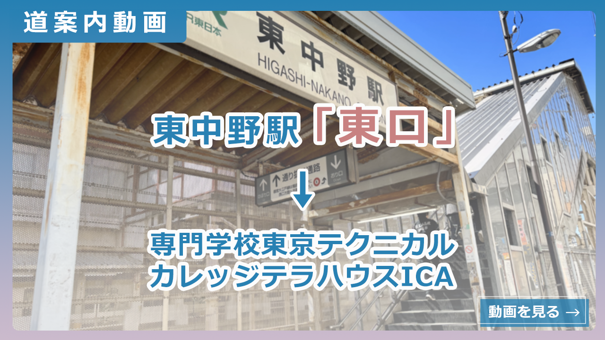
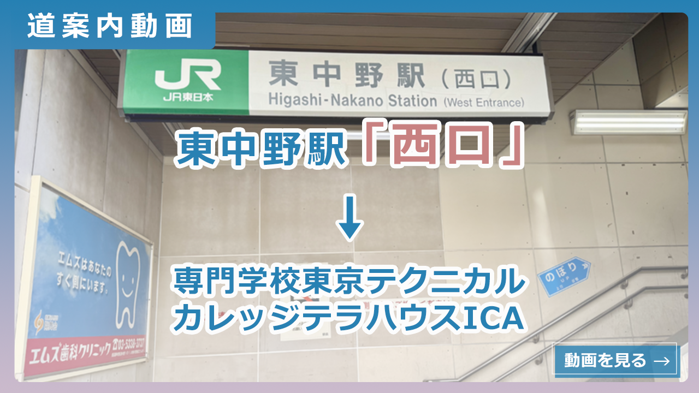

道案内動画のサムネイルバナー


- 概要
- 職業訓練校「専門学校東京テクニカルカレッジ テラハウスICA」のWEBサイトに掲載するための道案内動画のサムネイルバナーを制作しました。 東中野駅「東口」と「西口」それぞれからのルートに対応した2種類のバナーを作成しています。
- 目的
-
テラハウスICAでの職業訓練受講を検討している方が、校舎までのアクセス方法を理解できるよう、
動画視聴を促す視認性の高いバナーを制作する。 - ターゲット
- テラハウスICAでの職業訓練受講を検討している初めて校舎を訪れる人。
- 制作にあたって
-
初めての訪問でも親しみやすく安心感を持てるよう、明快でシンプルなデザインを心がけました。
テキストには縁取りを施して視認性を確保し、グラデーションで視覚的アクセントを追加。
東中野駅「東口」と「西口」の実際の写真を背景に使い、動画の違いが一目で伝わる構成にしています。 - 制作期間
- 5時間
- 使用したツール
- Photoshop
 概要
概要